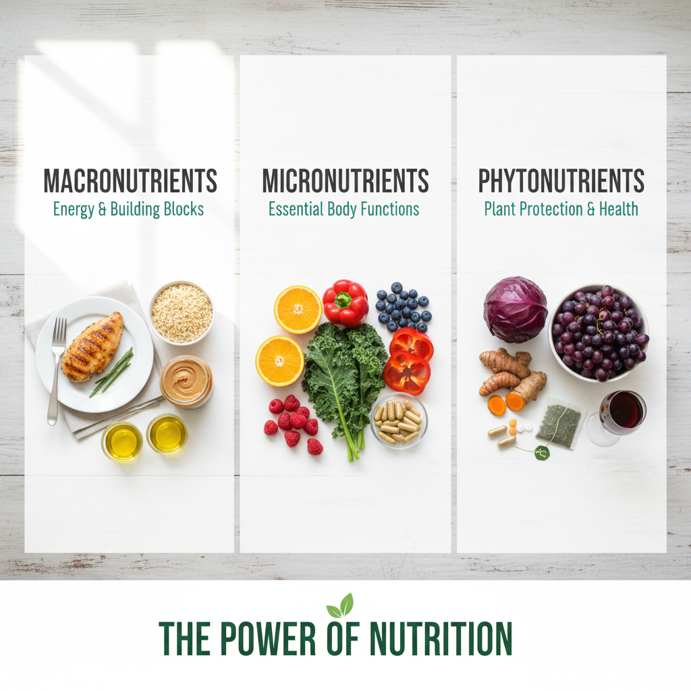
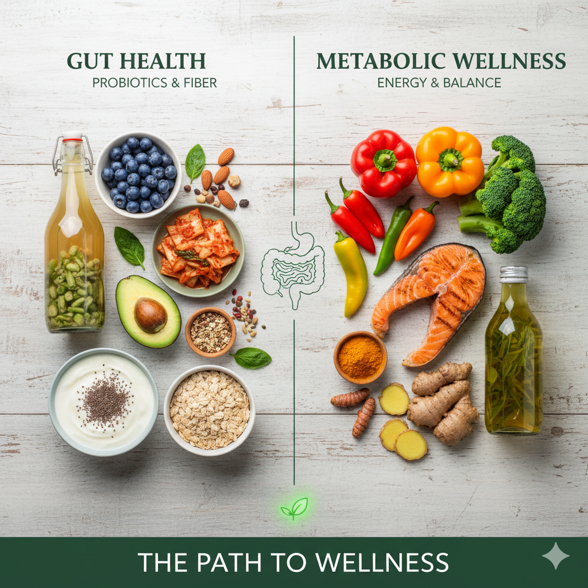
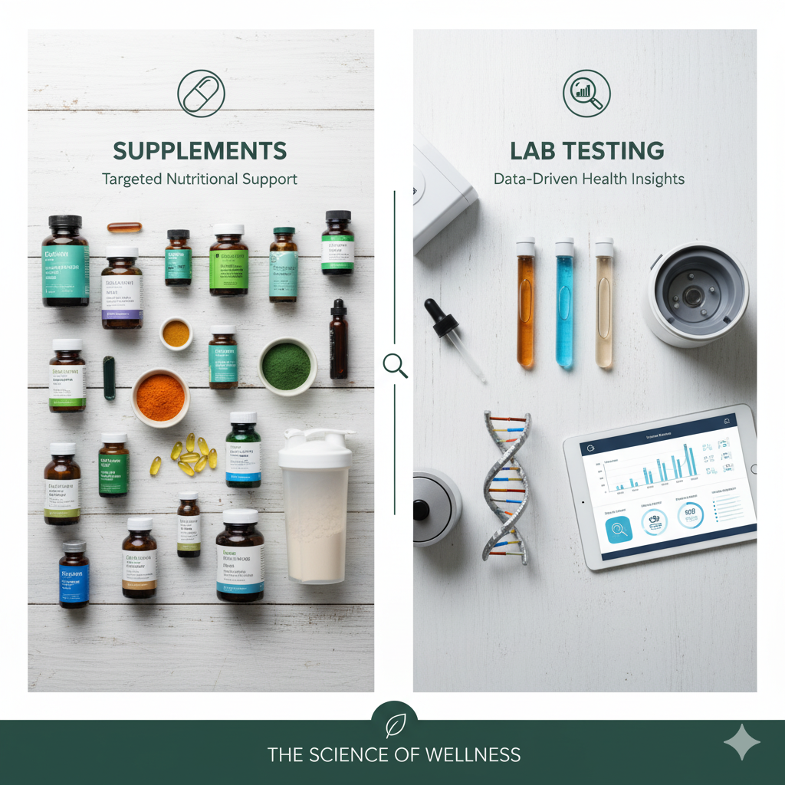

Healthy eating is about more than dieting. It's the art and science of choosing foods that nourish your body, support your goals, and fit your lifestyle. The internet is overflowing with nutrition advice—some reliable, some questionable. This guide clarifies the essentials, explores popular approaches, and shows how emerging science will shape the future of food.
Whether you're asking, "What foods are healthy?", looking for the benefits of specific ingredients, searching for high-quality protein sources, or planning smarter snacks, you'll find practical answers here. You'll also learn how to build balanced plates, harness gut health, and personalize your nutrition using data and technology.
🍽️ 1. Nutrition Foundations
🔬 Why Nutrition Matters
Food is fuel, information, and medicine. It provides energy, supplies building blocks for tissues, regulates hormones, and influences immunity, cognition, and mood. Consistent healthy eating reduces the risk of chronic conditions such as heart disease, type 2 diabetes, and certain cancers.
Core Principles:
- Prioritize whole, minimally processed foods.
- Balance macronutrients: carbohydrates, protein, and fat.
- Eat a color spectrum of fruits and vegetables for micronutrients and phytonutrients.
- Stay hydrated—water drives every metabolic process.
- Consistency beats perfection. Small, sustainable habits compound over time.
📏 Determining Calorie Needs
Calorie requirements depend on basal metabolic rate (BMR), activity level, age, sex, body composition, and goals.
| Goal |
Typical Strategy |
Calorie Adjustment |
Key Considerations |
| Maintenance |
Match intake to expenditure |
0% (TDEE) |
Monitor weight and energy. Adjust as activity changes. |
| Fat Loss |
Caloric deficit via food and activity |
-10% to -25% |
Aim for 0.5–1 kg per week. Prioritize protein and nutrient density. |
| Muscle Gain |
Caloric surplus with strength training |
+5% to +15% |
Progressive overload workouts, adequate sleep, higher protein. |
| Performance |
Fuel for sport-specific demands |
Adjust daily |
Time carbs around training, emphasize hydration and recovery. |
Tools: Use equations (Mifflin-St Jeor, Harris-Benedict) or smart wearables for a starting estimate. Reassess every 4–6 weeks based on results.
🥑 2. Macronutrients Explained

Carbohydrates
Main energy source. Include complex carbs for sustained fuel and fiber.
- Sources: Whole grains, legumes, fruits, starchy vegetables.
- Daily target: 45–65% of calories (adjust for activity).
- Fiber goal: 25–38 g per day.
Protein
Builds tissues, enzymes, hormones, and immune cells.
- Sources: Lean meats, fish, eggs, dairy, soy, legumes.
- Daily target: 1.2–2.0 g per kg of body weight (higher for athletes).
- Distribution: Include 20–40 g protein at each meal.
Fats
Support hormone production, brain health, vitamin absorption.
- Sources: Avocado, nuts, seeds, olive oil, fatty fish.
- Daily target: 20–35% of calories.
- Focus: Prioritize unsaturated fats; limit trans fats.
Glycemic Load vs. Glycemic Index: GI measures how quickly a carbohydrate raises blood sugar. GL accounts for serving size. Choose low-to-moderate GI foods combined with fiber, protein, and fat to stabilize energy.
🥕 3. Micronutrients & Phytonutrients
🍊 Vitamins & Minerals
Micronutrients support enzyme reactions, immunity, bone health, and energy metabolism.
| Nutrient |
Primary Benefits |
Food Sources |
Daily Reference Intake* |
| Vitamin C |
Collagen synthesis, antioxidant, immune support |
Citrus, strawberries, bell peppers, broccoli |
75–90 mg |
| Vitamin D |
Bone health, immune modulation, mood regulation |
Sunlight, fortified dairy, salmon, mushrooms |
600–800 IU |
| Magnesium |
Energy production, muscle relaxation, nerve function |
Leafy greens, nuts, seeds, whole grains |
310–420 mg |
| Iron |
Oxygen transport, energy metabolism |
Red meat, lentils, spinach, fortified cereals |
8–18 mg |
| Omega-3 (EPA/DHA) |
Heart, brain, anti-inflammatory |
Salmon, sardines, algae oil, walnuts (ALA) |
250–500 mg EPA+DHA |
*Values vary by age, sex, and life stage. Consult national dietary guidelines for specifics.
Phytonutrient Color Code:
- Red Lycopene, anthocyanins for heart health (tomatoes, berries).
- Orange Beta-carotene for eye and immune support (carrots, sweet potatoes).
- Green Chlorophyll, folate for detoxification and cell health (leafy greens).
- Blue/Purple Resveratrol, flavonoids for brain health (blueberries, purple cabbage).
- White Allicin and quercetin for anti-microbial effects (garlic, onions).
🥗 4. Building Balanced Meals
🍽️ The Healthy Plate Framework
Aim for a mix that keeps you full, energized, and nourished:
- Half the plate: Colorful vegetables and fruit.
- Quarter of the plate: Lean protein or plant protein.
- Quarter of the plate: Whole grains or starchy vegetables.
- Extras: Healthy fats, herbs, spices, fermented foods.
Breakfast Ideas
- Greek yogurt parfait with berries, chia, and almonds.
- Veggie omelet with whole grain toast and avocado.
- Overnight oats with flaxseed, banana, and peanut butter.
Lunch Ideas
- Quinoa bowl with roasted vegetables, chickpeas, and tahini.
- Salmon salad with leafy greens, edamame, and citrus dressing.
- Whole grain wrap with turkey, hummus, and sprouts.
Dinner Ideas
- Grilled chicken, brown rice, and sautéed broccoli.
- Lentil curry with basmati rice and cucumber raita.
- Baked tofu, sweet potatoes, and roasted Brussels sprouts.
Meal Prep Tips:
- Batch cook proteins and grains; store in airtight containers.
- Pre-chop vegetables and wash greens for quick salads.
- Use compartment containers to keep components crisp.
- Label meals with date and contents to maintain freshness.
- Create theme nights (Mediterranean Monday, Taco Tuesday) to keep variety.
🍎 5. Smart Snacking & Protein Sources
🥬 Nutrient-Dense Snacks
- Sliced vegetables with hummus or Greek yogurt dip.
- Apple slices with almond butter and cinnamon.
- Trail mix (unsweetened dried fruit, nuts, seeds).
- Whole grain crackers with cottage cheese and tomatoes.
- Edamame or roasted chickpeas with sea salt.
🥚 Protein Diversity
Animal-Based
- Skinless poultry, lean beef, pork tenderloin.
- Fish and seafood (salmon, tuna, shrimp).
- Eggs, Greek yogurt, cottage cheese.
Plant-Based
- Legumes: lentils, black beans, chickpeas.
- Soy foods: tofu, tempeh, edamame.
- Whole grains: quinoa, farro, amaranth.
- Nuts and seeds: hemp, chia, pumpkin seeds.
Protein Optimization
- Combine plant proteins (beans + grains) for complete amino acids.
- Use protein powders (whey, pea, soy) when convenient.
- Distribute protein evenly across meals to maximize muscle protein synthesis.
🧠 6. Gut Health & Metabolic Wellness

Gut microbes impact digestion, immunity, neurotransmitters, and weight regulation. A diverse microbiome thrives on fiber, fermented foods, and polyphenols.
Feed Your Microbiome:
- Prebiotics: Fibers that feed beneficial bacteria (onions, garlic, oats, green banana).
- Probiotics: Live microbes that colonize the gut (kombucha, kefir, yogurt, kimchi).
- Synbiotics: Combine prebiotics and probiotics for synergistic effects.
💤 Metabolic Factors
- Sleep 7–9 hours; poor sleep alters hunger hormones (ghrelin/leptin).
- Manage stress; chronic cortisol spikes increase cravings and abdominal fat.
- Stay active; muscle tissue improves insulin sensitivity and glucose uptake.
- Hydrate; even mild dehydration impairs metabolism and cognition.
🌱 7. Dietary Styles & Trends
Mediterranean
Rich in olive oil, fish, legumes, vegetables. Supports heart health and longevity.
Plant-Based / Vegan
Emphasizes plant proteins, whole grains, vegetables. Watch B12, iron, omega-3.
Flexitarian
Mostly plant-focused with occasional animal products. Highly sustainable.
Low-Carb / Keto
Focuses on fats and proteins, minimal carbs. Useful for specific goals, requires monitoring.
Intermittent Fasting
Cycles eating and fasting windows. Helps appetite control and insulin sensitivity for many.
DASH / Low-Sodium
Designed to lower blood pressure with fruits, vegetables, and low-fat dairy.
Choosing a Style: Align with your culture, preferences, health needs, and sustainability goals. The best plan is the one you can follow long-term while meeting nutrient requirements.
🧪 8. Supplements & Lab Testing

Supplements fill gaps but should complement—not replace—whole foods.
| Supplement |
When to Consider |
Notes |
| Multivitamin |
Restrictive diets, busy lifestyle |
Look for third-party testing and appropriate doses. |
| Vitamin D3 |
Limited sun exposure, darker skin tones, indoor lifestyle |
Test blood levels (25(OH)D) to personalize dosage. |
| Omega-3 (EPA/DHA) |
Low fish intake, inflammation, heart health goals |
Choose high-quality, IFOS-certified fish or algae oils. |
| Probiotics |
Digestive issues, antibiotic recovery |
Select strains with research for your condition. |
| Protein Powder |
Convenience, athletes, higher protein needs |
Check for minimal added sugars/artificial ingredients. |
Testing Insights: Annual blood work (CBC, CMP, lipid profile, A1c, vitamin D, B12, iron panels) plus GI mapping or food sensitivity tests when medically indicated provide data to tailor nutrition.
🚀 9. Future of Nutrition
🧬 Personalized Nutrition
- Genetics: DNA-based plans suggest macronutrient ratios, caffeine tolerance, nutrient needs.
- Microbiome sequencing: Gut tests offer food recommendations to foster beneficial bacteria.
- Continuous glucose monitoring (CGM): Provides real-time data on how foods affect blood sugar.
- Wearables & AI: Integrate activity, sleep, stress, and food logging to deliver adaptive meal plans.
Emerging Tech: Smart kitchen devices scan pantry items, suggest recipes, and automate grocery lists. AI-powered nutrition coaches analyze your diary and recommend adjustments instantly.
♻️ Sustainable Eating
- Prioritize plants, legumes, seasonal produce, and regenerative agriculture products.
- Reduce food waste: plan meals, store properly, repurpose leftovers.
- Support local farmers and community-supported agriculture (CSA) programs.
- Experiment with climate-friendly proteins (lentils, insect protein, lab-grown meat).
📚 Conclusion & Next Steps
Key Takeaways:
- Healthy eating blends science with personal preference—balance macros, focus on micronutrients, and enjoy diverse foods.
- Plan meals ahead, prepare nutritious snacks, and align your plate with your goals.
- Cultivate gut health, manage stress, and sleep well for metabolic resilience.
- Explore dietary styles thoughtfully; sustainability and enjoyment matter.
- Use data (labs, wearables, apps) to personalize nutrition as technology evolves.
Action Plan:
- Audit your current diet—note strengths and gaps.
- Set SMART goals (e.g., add two cups of vegetables daily, cook at home 5 nights).
- Create a weekly meal plan with balanced macros and colorful produce.
- Experiment with one new healthy recipe or ingredient each week.
- Track energy, mood, and performance to refine your approach.
Medical Disclaimer: This guide provides educational information and is not medical advice. Consult a registered dietitian or healthcare provider for personalized nutrition plans, especially if you have medical conditions or take medications.
Healthy eating is an ongoing journey. Celebrate progress, stay curious, and enjoy the flavors, colors, and cultures that food offers. Nourish your body, honor your preferences, and let nutrition empower every aspect of your life.